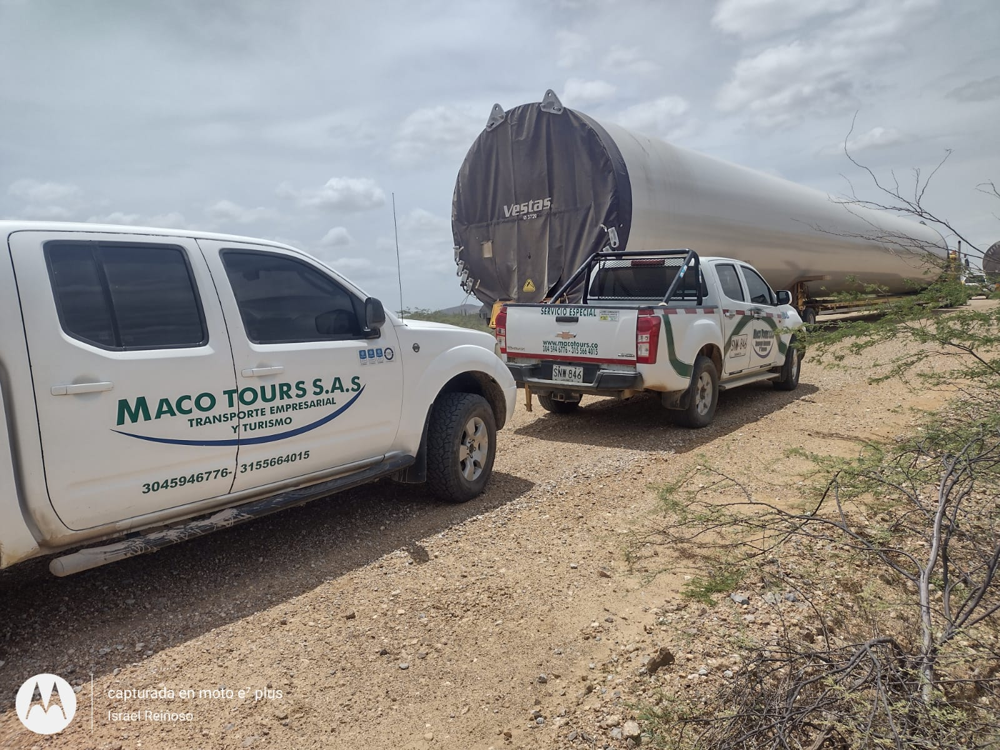
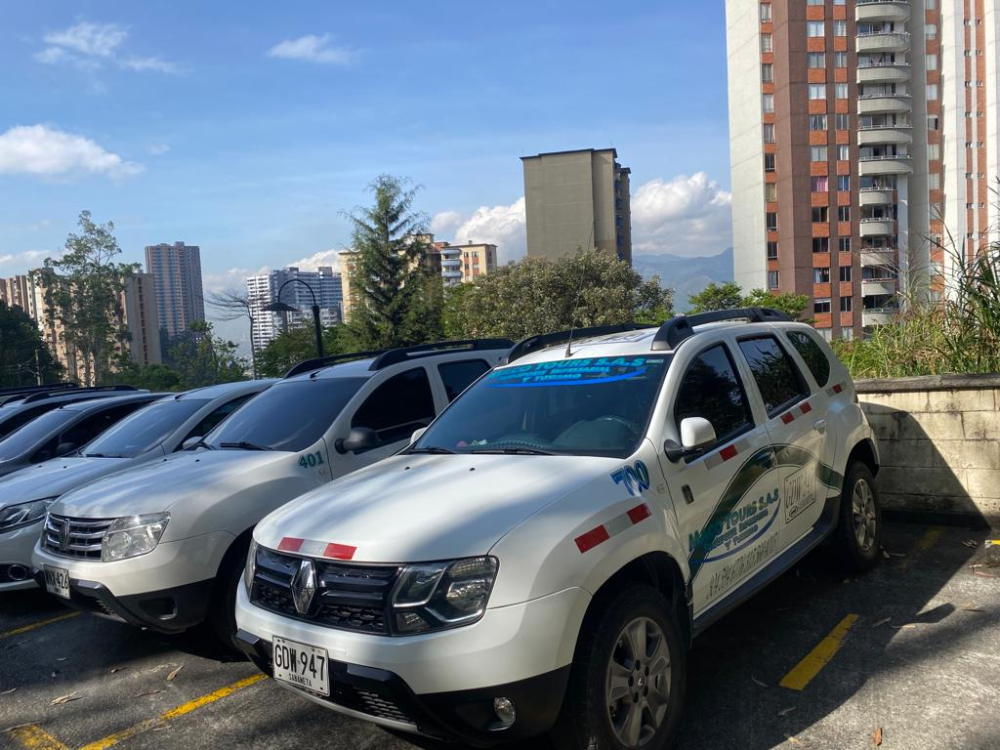
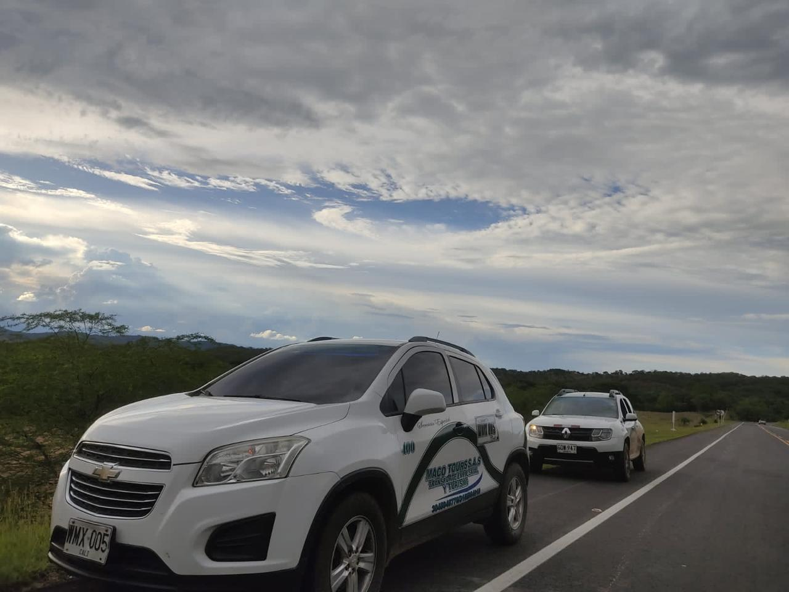
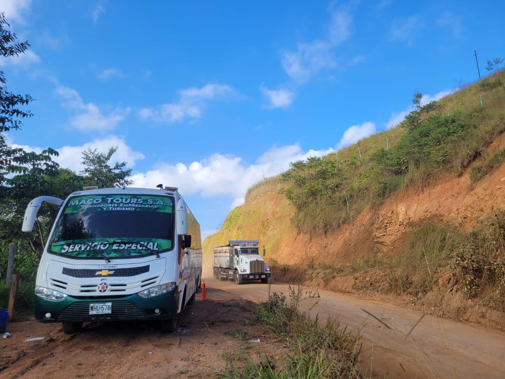
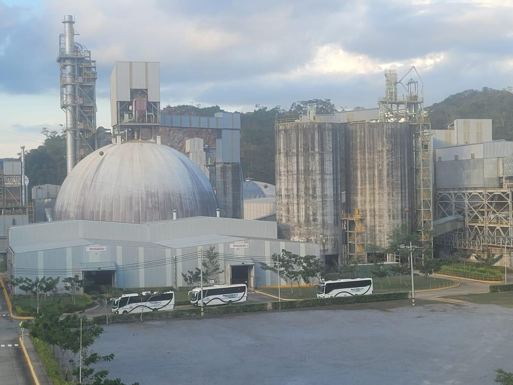

Experiencia y trayectoria
Maco Tours cuenta con una rica trayectoria y experiencia en el transporte público, destacándose por afrontar proyectos desafiantes con éxito.
Saber Mas...Personal altamente calificado
Nuestro equipo altamente calificado y comprometido garantiza operaciones eficientes y profesionales en cada viaje.
Saber Mas...Servicios adaptados y personalizados
Maco Tours se destaca por comprender las necesidades específicas de sus clientes y ofrecer soluciones de transporte adaptadas a sus requisitos individuales.
Saber Mas...Nosotros
Bienvenido a Transportes Especiales Maco Tours SAS, la principal opción en transporte público especializado en Colombia. Nos especializamos en llevar soluciones de movilidad a áreas de difícil acceso, brindando un servicio confiable y seguro en todo el territorio nacional. Nuestro éxito radica en nuestro equipo altamente calificado y comprometido, cuyo enfoque principal es entender las necesidades únicas de cada cliente. Con esta comprensión, nos esforzamos por ofrecer soluciones personalizadas que satisfagan las demandas específicas de cada proyecto. En Transportes Especiales Maco Tours SAS, la satisfacción del cliente es nuestra prioridad número uno. Nos esforzamos por superar constantemente las expectativas, garantizando seguridad, confiabilidad y calidad excepcional en cada viaje. Nuestro compromiso con la excelencia se refleja en cada aspecto de nuestros servicios, desde la planificación hasta la ejecución. Confía en nosotros para proporcionarte un transporte público de primera clase que no solo te lleve a tu destino, sino que también supere tus expectativas en cada paso del camino. Descubre cómo podemos facilitar tus desplazamientos con seguridad, confiabilidad y un servicio de calidad excepcional. ¡Únete a nosotros en el viaje hacia una experiencia de transporte excepcional!
Nuestros Servicios

Transporte Empresarial
Este servicio consiste en transportar personal empresarial, tanto de planta, de turnos y administrativos como directivos. También incluye el traslado de personal sin horario definido para su desplazamiento. Transportes Especiales Maco Tours S.A.S pone a disposición de su empresa una variedad de vehículos modernos, que les permite satisfacer las necesidades de transporte del personal empresarial. Transportes Especiales Maco Tours S.A.S cuenta con conductores responsables que le atenderán en forma diligente y amable, como ustedes merecen y esperan.

Transporte Escolar
Contamos con un parque automotor moderno, cómodo, seguro y confiable para ofrecer el mejor servicio de desplazamiento dentro del territorio nacional, en viajes familiares y recreativos. En Transportes Especiales Maco Tours S.A.S contamos con vehículos de última generación, que garantiza un excelente confort con todos los requerimientos que para que disfrutes tu viaje, nuestros vehículos están dotados con: aire acondicionado, baño, pantallas Lcd, Dvd y dispositivos de audio con entrada USB, sin olvidar la puntualidad, seguridad y servicio que te mereces.

Turistico
Contamos con un parque automotor moderno, cómodo, seguro y confiable para ofrecer el mejor servicio de desplazamiento dentro del territorio nacional, en viajes familiares y recreativos. En Transportes Especiales Maco Tours S.A.S contamos con vehículos de última generación, que garantiza un excelente confort con todos los requerimientos que para que disfrutes tu viaje, nuestros vehículos están dotados con: aire acondicionado, baño, pantallas Lcd, Dvd y dispositivos de audio con entrada USB, sin olvidar la puntualidad, seguridad y servicio que te mereces.
Llamada a la Acción
¡Descubre cómo Transportes Especiales Maco Tours SAS puede facilitar tus desplazamientos con seguridad, confiabilidad y un servicio de calidad excepcional!
Contacta con NosotrosBeneficios de Maco Tours para sus clientes

Acceso a áreas de difícil acceso
Maco Tours proporciona transporte especializado que llega a áreas remotas y de difícil acceso en Colombia, asegurando que las comunidades tengan acceso a servicios de transporte confiables y seguros donde más los necesitan.

Soluciones personalizadas
La empresa se compromete a comprender las necesidades individuales de cada cliente y ofrecer soluciones de transporte adaptadas a sus requisitos específicos, garantizando una experiencia de viaje única y satisfactoria para cada uno.

Seguridad y confiabilidad
Maco Tours garantiza la seguridad y la confiabilidad en cada viaje, priorizando la seguridad de sus pasajeros y asegurando que lleguen a su destino de manera segura y puntual.

Excelencia en el servicio
La empresa se esfuerza por ofrecer un servicio de calidad excepcional en cada viaje, brindando una experiencia de transporte que supera las expectativas de los clientes y garantiza su satisfacción en cada paso del camino.